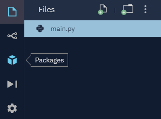
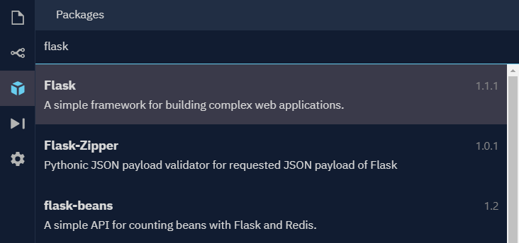
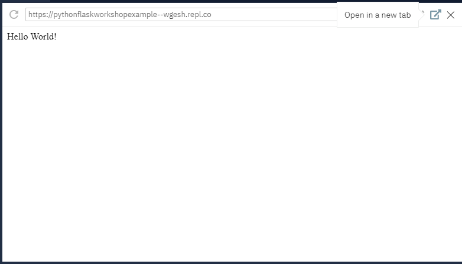
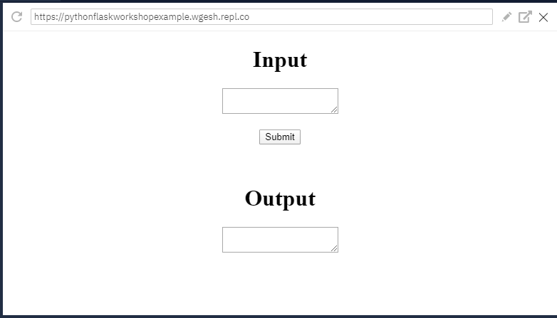

Table of Contents
In this workshop, you will learn how to setup a basic Flask web app. Some experience with Python and HTML is helpful but not required.
Flask is a web framework. This means Flask provides you with tools, libraries and technologies that allow you to build a web application. This web app can be a set of web pages, a blog, a wiki or even a web-based calendar application. (Source)
In this workshop we will be using an online environment called Repl.it. Repl.it is useful because it is cloud-based, meaning it lets you host your code and web app on their servers rather than locally on your computer. Head there and login or sign up using the button below (if you'd prefer not to use an account you can just select the "start coding" button).
Once you're logged in and on the homepage hit the button in the top right that says "new repl" (a repl is essentially what Repl.it calls a project). For the language choose Python and then hit "Create Repl". When the project loads hit the box icon on the left side as shown below.
This will bring you to the packages menu where you'll be adding Flask to the project. Type "flask" into the search bar and select the same package as highlighted below. Hit the plus button to add the package. Once the button turns into a minus symbol and it allows you to remove the package, that means the package has successfully installed.
The project is now setup and you're ready to start coding!
The following will walk you through setting up a basic Flask app that will output "Hello World!" to your webpage. To start off, some setup code is required. Type or copy the
code below into your project's main.py file. (Note: Make sure to read the comments in the code to understand how things work.)
from flask import Flask # Import the necessary things from the flask package
app = Flask(__name__) # Creates the application object
Next, we can create the webpage and display something on it. We also need to make sure to include the last line for the app to properly run on Repl.it's servers.
@app.route('/') # Creates a new webpage
def index(): # Defines what route "index" will do
return "Hello World!"
app.run(host='0.0.0.0', port = 8080)
When you hit the "run" button in around the top middle Repl.it should automatically bring up a preview of your web app in the top right area of your screen. You can also click the arrow icon to open your app in a new tab.
You can choose to stop here or continue on to see another more in-depth example of what Flask is capable of.
This next example will gather a user input from the webpage and send back a processed result. This time we'll need to add our own custom webpage (HTML file). For Flask to find
the file properly we need to setup a "templates" folder where we will store the webpage. Do this by hitting the "Add folder" button and naming it "templates" (make sure it's
all lower case). Also, go ahead and create a file within the folder called index.html.
Next, we need to setup how the webpage will look. The following code will setup a basic webpage has displays two text areas and a button.
<!DOCTYPE HTML>
<head>
<meta charset="UTF-8">
<title>Home</title>
<!--Styling to center the content-->
<style type="text/css">
body {
text-align: center;
}
</style>
</head>
<body>
<h1>Input</h1>
<!--Sets up a form that will send data when the submit button is pressed-->
<form method="POST" action="">
<!--Below is how the variables are formatted: {{example}}-->
<!--When calling this text area we use the attribute "name" rather than
the "id" which is used for styling-->
<textarea id="text-input" name="text_input">{{input_text}}</textarea>
<br>
<br>
<input type="submit" value="Submit">
</form>
<br>
<br>
<h1>Output</h1>
<textarea id="text-output" name="text_output">{{output_text}}</textarea>
</body>
</HTML>
We also need to update the main.py file.
from flask import Flask, render_template, request # Import the necessary things from the flask package
app = Flask(__name__) # Creates the application object
@app.route('/') # Creates a new webpage
def index(): # Defines what route "index" will do
return render_template('index.html') # Renders index.html
@app.route('/', methods=['POST']) # Notice how this is similar to the code in the index.html file. When the form is submitted this method is triggered.
def submit(): # Defines what route "index" will do, but this time the route with another parameter
example_text = request.form['text_input'] # Grabs text from input text area
example_text = example_text.upper() # Makes the input text uppercase
return render_template('index.html', output_text = example_text) # Renders index.html again, but this time also returning a variable with it
app.run(host='0.0.0.0', port = 8080)
Once you've copied over all the code you can hit the "restart" button to see your changes. You should be able to enter text into the input text area and hit the submit button. This should rerender the webpage and display the same text in all uppercase in the output text area. It should look like this:
You can see a working example at my repl.
If you'd like to continue expanding your Python Flask knowledge here's some extra resources to help guide you.